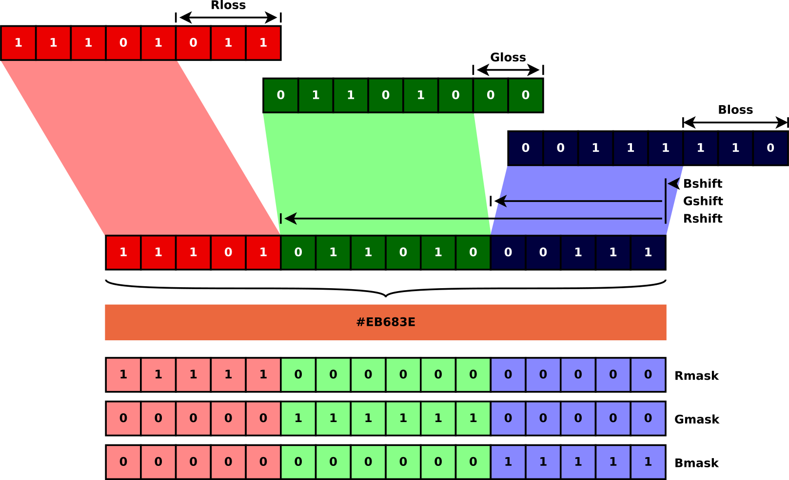
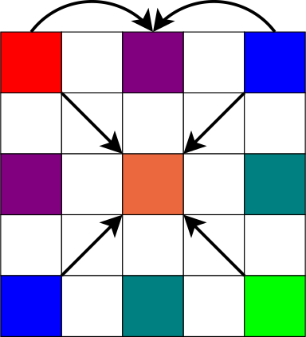

1R, G és B
A monitorok, legyenek azok buborék (képcsöves) vagy lapos (lcd) fajtájúak, a vörös, zöld és kék szín összekeveréséből állítják elő a színeket. Minden képpont helyén igazából három van, amelyek eltérő színű fénnyel világítanak. Ez nagyítóval nézve látszik is, érdemes megnézni.
Mivel a monitornak ilyen komponensekből kell összeállítaniuk a színeket, ezért azok a videókártya memóriájába is ilyen formátumban kerülnek. A három színösszetevőt az RGB betűkkel szokás jelölni: red, green, blue. Az egyes színösszetevők erősségét a hardver általában egy 0..255 skálán, vagyis 8 biten tárolja. 0 a minimális fényerő (fekete), 255 a maximális. Így három bájton 256×256×256=28×28×28=224-féle szín keverhető ki, összesen 16 777 216 darab. Ez nagyjából annyi, mint amennyit az emberi szem meg tud különböztetni.
Ha spórolni kell a memóriával vagy a számításokkal, akkor kevesebb biten, pontatlanabbul is tárolhatóak az egyes értékek. Az elterjedt variációk:
- 24 bit: a fent említett.
- 32 bit: igazából ez ugyanaz, mint a 3×8=24 bites, csak minden bájthármas után egy negyedik üres
bájtot helyeznek el; azért, hogy egy képpont memóriacíme néggyel való szorzással legyen
számítható. Ez egyszerűbb, mint a 3-mal való szorzás, mivel bitléptetéssel is megoldható.
A négy bájt egyszerre írható és olvasható, egy 32 bites egész típussal (SDL-ben az
Uint32direkt erre a célra van). - 15 bit: minden komponensre 5 bit jut, vagyis 25=32-es skálán adhatóak meg.
- 16 bit: egy bájt általában 8 bites, ezért a 15 bites tárolásnál egy bit szabadon maradt. Ezzel a bittel a zöld komponens pontosságát érdemes megnövelni, mert az emberi szem arra a legérzékenyebb. Vagyis: R=5 bit, G=6 bit, B=5 bit.
- 8 bit: ezt komponensekre felosztva már túl kevés bit jutna az egyes színekre. A 8 bites tárolásnál egy palettát használnak: 256 szín tömbje, amelyben a képponthoz tartozó 8 bites szám az index.
2A formátumok kezelése
Az SDL az összes fent említett formátumot támogatja. Ha két különböző formátumban lévő képünk van, akkor
is másolható egyik a másikra; a szükséges átalakítást az SDL_BlitSurface() függvény elvégzi,
még ha lassú is lesz tőle a program. Néha azonban szükségünk van arra, hogy mi magunk manipuláljuk
az egyes képpontokat.
Minden SDL_Surface tartalmaz egy pixels nevű pointert, ez mutat a memóriában
a képpontokat tároló adatterületre. Tartalmaz továbbá egy SDL_PixelFormat struktúrát is,
amelyik a kép tárolási módjáról tartalmaz információkat. Ennek a lényeges adattagjai a következők:
typedef struct {
...
Uint8 BitsPerPixel;
Uint8 BytesPerPixel;
Uint8 Rloss, Gloss, Bloss, Aloss;
Uint8 Rshift, Gshift, Bshift, Ashift;
Uint32 Rmask, Gmask, Bmask, Amask;
...
} SDL_PixelFormat;
A BitsPerPixel mező a fent említett formátumokra utal, értéke
lehet pl. 8, 16 vagy 24. A BytesPerPixel arra használható, hogy egy
képpont memóriacímét egy soron belül könnyen ki tudjuk számolni, mert azt mondja
meg, hány bájt (sizeof(char)) egy képpont. A képponthoz tartozó
bájtok manipulációja a többi mezőkben tárolt számok segítségével végezhető el.
Egy példán a legegyszerűbb látni az egészet. Tegyük fel, hogy az R=0xEB, G=0 x68, B=0x3E színt (amelyik ez a szín ) szeretnénk tárolni 16 biten. Az R komponensre 5, a G-re 6, a B-re 5 bitet szánunk. Ha ezeket ilyen sorrendben is tároljuk el a 16 biten, vagyis két bájton belül, akkor a következő formátum adódik. 
A vörös (R) komponens 8 bit helyett csak 5 biten tárolódik. Ezért az alsó 3 bitet el kell
dobni. Az SDL_PixelFormat struktúrában az Rloss mező az R komponensből
eldobott bitek számát tárolja. A kapott értéket Rshift bitnyivel feljebb toljuk;
mert nem a 16 bit legalsó, hanem a legfelső helyiértékű bitjein tárolódik az R komponens.
Ugyanígy működik ez a többi komponensnél is; a zöldet 6 biten tároljuk, ezért Gloss
csak 2. A kék komponens pedig a végleges számban a legalsó helyiértékű bitekre kerül, ezért
Bshift 0 lesz — legalábbis ebben a példában, mert elképzelhető lenne az is, hogy
nem R, G, B sorrendben tároljuk a komponenseket, hanem B, G, R sorrendben. Az SDL úgy hozza létre
a képeket, hogy mindig beállítja ezeket a mezőket a megfelelő értékre, megkönnyítve ezzel a
dolgunkat. A fentiek alapján, ha egy adott r,g,b színhez keressük azt a (több bájtos) számot,
amelyet a memóriába kell írnunk:
adat = (r >> Rloss << Rshift) | (g >> Gloss << Gshift) | (b >> Bloss << Bshift);
Az Rmask, Gmask és Bmask mezők bitmaszkokat
tartalmaznak. Az Rmask például egy olyan számot, amelyben ott vannak egyesek, ahol a
képpont adatában az R komponenshez tartozó rész található. Ezt bináris ÉS kapcsolatba hozva a
képpont adattal ki tudjuk vágni belőle az R komponenshez tartozó részt. Ezt a helyére tolva
visszakapjuk az eredeti r értéket. Vagyis a fenti számítás visszafelé így végezhető el:
r = (adat & Rmask) >> Rshift << Rloss; g = (adat & Gmask) >> Gshift << Gloss; b = (adat & Bmask) >> Bshift << Bloss;
Az Aloss, Ashift és Amask
mezők a kép átlátszóságára vonatkozó információk kezelését teszik
lehetővé, ugyanilyen módon.
Lényegében egyébként ez a rajzolás egyik részfeladata, amitől igazából az SDL_gfx megszabadít minket.
3Kép a semmiből
Hozzunk létre egy képet! 
A plazma nevű rekurzív algoritmus a következő módon működik. Egy kép négy sarkában helyezzünk el színeket. Ez a négy pont, a kép négy sarka, egy téglalapot határoz meg. A téglalap oldalait felezzük meg; az oldalfelező pontokban állítsunk be olyan színeket, amelyek a sarkok színei közötti átmenetek. Például a fenti középső pont legyen a két fenti sarokpont színe között félúton lévő szín. A téglalap közepén lévő pontot is színezzük ki, mégpedig úgy, hogy annak a színe a négy sarok színe közötti átmenet legyen; plusz/mínusz egy véletlenszám. A véletlenszám nagysága legyen arányos a téglalap nagyságával, vagyis minél nagyobb a téglalap, annál nagyobb legyen a véletlen eltérés is. Ezekkel a pontokkal a téglalapot négy kisebb részre osztottuk; csináljuk meg a négy kisebb részre ugyanezt (rekurzívan).
A lenti programban ezt a procedúra háromszor fut le. Három kép van; az egyik
lesz a végülis kirajzolt kép R, a másik a G, a harmadik pedig a B komponense.
Létrehozunk egy SDL képet a memóriában az SDL_CreateRGBSurface()
függvénnyel, 32 bites színtérrel. A sok nulla a függvény paraméterlistájának a
végén az Rmask, Gmask stb. értékek. Nulla esetén az
alapértéket állítja be ezekhez az SDL. Mivel 32 bites képet kértünk,
egy Uint32-t tudok írni egyszerre a memóriába: az egy képpont. A tömbbe írandó
értékek a fent részletezett módon számolódnak ki.
A képpont megcímzése trükkös. A képhez tartozó pixels mező egy void *
típusú mutató, amely a képpontok tömbjének első elemére mutat. A pitch mező
pedig egy egész szám, amely azt mutatja, hogy hány bájtonként kezdődik egy sor. Ezzel meg lehet
határozni a kép egy sorának címét a memóriában; az eredményt egy Uint32 * típusú
mutatóba kell tenni, amelynek segítségével a kép adott során belül egy adott pixel egyszerű
indexeléssel előállítható. Ha 16 bites képem lenne, akkor Uint16-ot, ha 8 bites,
akkor pedig Uint8-at kellene használni. Ezek egyébként az SDL által definiált
típusok; Uint32 egy 32 bites, előjel nélküli egész szám.
Az első kép a program kimenetét mutatja. A második pedig azt, hogy hogyan nézne ki a kép, ha generálás közben megállítanánk. Ezen látszik a rekurzió. A színek az utóbbin úgy vannak beállítva, hogy kék és fehér közötti átmenetek jelenjenek meg; a program így felhőket rajzol. Ismerős lehet: az InfoC facebook oldalnak ez rajzolta a hátterét.
#include <SDL.h>
#include <stdlib.h>
#include <time.h>
enum { MERETX = 640, MERETY = 480 };
typedef unsigned char Kep[MERETY][MERETX];
void plasma(Kep kep, int x1, int y1, int x2, int y2) {
if (x2-1>x1) {
kep[y1][(x1+x2)/2] = (kep[y1][x1]+kep[y1][x2])/2;
kep[y2][(x1+x2)/2] = (kep[y2][x1]+kep[y2][x2])/2;
}
if (y2-1>y1) {
kep[(y1+y2)/2][x1] = (kep[y1][x1]+kep[y2][x1])/2;
kep[(y1+y2)/2][x2] = (kep[y1][x2]+kep[y2][x2])/2;
}
if (x2-1>x1) {
int c = (kep[y1][x1]+kep[y1][x2]+kep[y2][x1]+kep[y2][x2])/4
+ rand()%((x2-x1)*2)-(x2-x1);
c = c>255?255:(c<0?0:c);
kep[(y1+y2)/2][(x1+x2)/2] = c;
plasma(kep, x1, y1, (x1+x2)/2, (y1+y2)/2);
plasma(kep, (x1+x2)/2, y1, x2, (y1+y2)/2);
plasma(kep, x1, (y1+y2)/2, (x1+x2)/2, y2);
plasma(kep, (x1+x2)/2, (y1+y2)/2, x2, y2);
}
}
int main(int argc, char *argv[]) {
Kep komponensek[3];
int x, y;
SDL_Surface *screen, *bmp;
SDL_Event ev;
SDL_Init(SDL_INIT_VIDEO);
screen = SDL_SetVideoMode(MERETX, MERETY, 0, SDL_ANYFORMAT);
if (!screen) {
fprintf(stderr, "Nem sikerult megnyitni az ablakot!\n");
exit(1);
}
srand(time(NULL));
for (x = 0; x < 3; x++) {
komponensek[x][0][0] = rand()%256;
komponensek[x][0][MERETX-1] = rand()%256;
komponensek[x][MERETY-1][0] = rand()%256;
komponensek[x][MERETY-1][MERETX-1] = rand()%256;
plasma(komponensek[x], 0, 0, MERETX-1, MERETY-1);
}
/* kerek egy 32 bit/komponens kepet */
bmp = SDL_CreateRGBSurface(0, MERETX, MERETY, 32, 0, 0, 0, 0);
/* osszeallitom a kepet az SDL surface-ben */
for (y = 0; y < MERETY; y++) {
Uint32 *sor = (Uint32*) ((char*) bmp->pixels + y*bmp->pitch);
for (x = 0; x < MERETX; x++) {
Uint32 szam; /* 32 bites a kep, ez lesz egy pixel */
szam = (komponensek[0][y][x] >> bmp->format->Rloss << bmp->format->Rshift)
| (komponensek[1][y][x] >> bmp->format->Gloss << bmp->format->Gshift)
| (komponensek[2][y][x] >> bmp->format->Bloss << bmp->format->Bshift);
sor[x] = szam;
}
}
SDL_BlitSurface(bmp, NULL, screen, NULL);
SDL_FreeSurface(bmp); /* mar nem kell */
SDL_Flip(screen);
while (SDL_WaitEvent(&ev) && (ev.type != SDL_QUIT && ev.type != SDL_KEYDOWN)) {
/* csak var */
}
SDL_Quit();
return 0;
}